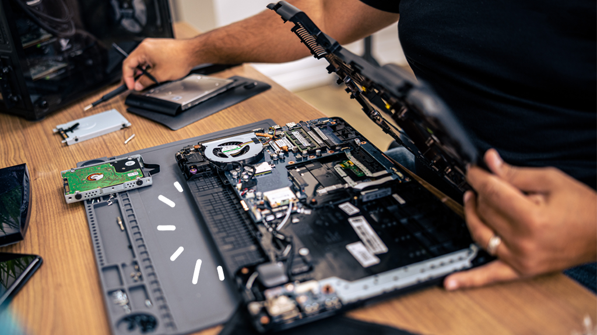

Solusi Servis Laptop Terpercaya di Pacitan, Dikerjakan Teknisi Muda Berbakat
Dapatkan servis laptop yang andal dengan biaya terjangkau. Didukung oleh mahasiswa prodi Pemeliharaan Komputer dan Jaringan (PKJ) dengan supervisi dosen ahli.

Diservis Tahun Ini
Mengapa Memilih Servis Laptop TEFA PKJ?
Kombinasi integritas akademis, dedikasi teknisi muda, dan pembimbingan profesional untuk hasil servis yang maksimal dan transparan.
Supervisi Dosen Ahli
Setiap perbaikan ditangani langsung oleh mahasiswa Prodi Pemeliharaan Komputer dan Jaringan (PKJ) dengan pengawasan ketat dari dosen pembimbing.
Biaya Ramah Kantong
Tarif servis yang transparan dan terjangkau bagi kalangan mahasiswa maupun masyarakat umum di Pacitan.
Cek Kerusakan Gratis
Konsultasikan kendala perangkat Anda tanpa dipungut biaya pemeriksaan awal.
Layanan Servis Laptop TEFA PKJ
Jasa Servis Laptop yang Terpercaya dan Terjangkau di Pacitan. Kami menawarkan berbagai jenis layanan servis laptop, termasuk pembersihan hardware, instalasi, penggantian komponen, dan lain sebagainya. Kami juga menyediakan layanan konsultasi dan cek kerusakan gratis.
Pembersihan Hardware & Pasta
Deep cleaning debu kipas, heatsink, dan penggantian thermal paste berkualitas agar laptop tidak mudah panas & performa stabil.
Instalasi Sistem & Software
Instalasi ulang OS Windows/Linux resmi, update driver, software perkuliahan/kantor, serta pembersihan virus dan malware.
Penggantian & Upgrade Komponen
Upgrade SSD super cepat, penambahan RAM, penggantian keyboard, layar LCD rusak, baterai drop, dan engsel laptop patah.
Konsultasi & Cek Kerusakan Gratis
Pemeriksaan menyeluruh sebelum tindakan perbaikan tanpa biaya apapun. Anda menerima estimasi biaya sebelum servis disetujui.
Pertanyaan yang Sering Diajukan (FAQ)
Semua hal yang perlu Anda ketahui tentang alur pemeriksaan dan servis laptop di TEFA PKJ AKN Pacitan.
Apakah ada biaya untuk pengecekan awal?
Tidak ada. Kami menyediakan layanan cek kerusakan secara gratis sebelum tindakan perbaikan dilakukan.
Siapa yang menangani perbaikan laptop saya?
Perbaikan dilakukan oleh mahasiswa Prodi PKJ AKN Pacitan dengan supervisi langsung oleh dosen ahli.
Bagaimana cara melakukan booking servis?
Anda cukup menekan tombol WhatsApp di halaman ini untuk berkonsultasi langsung dan mengatur jadwal kedatangan.
Siap Mengembalikan Performa Laptop Anda?
Hubungi kami sekarang untuk konsultasi awal dan pemeriksaan gratis.
Hubungi via WhatsApp (0812-0000-0000)Langsung terhubung dengan teknisi dan tim admin bengkel TEFA PKJ